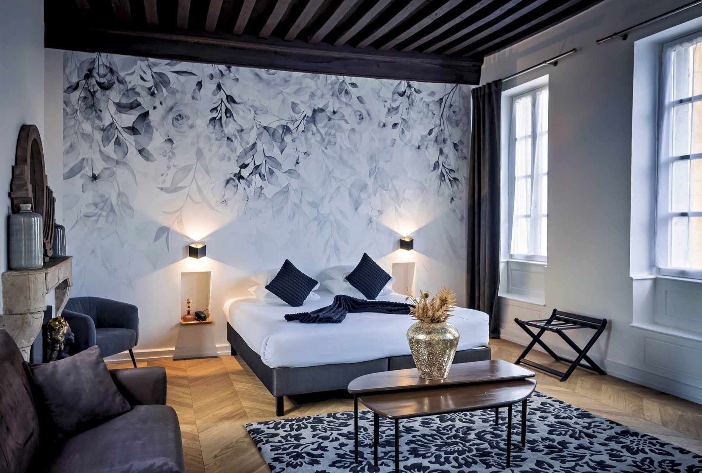
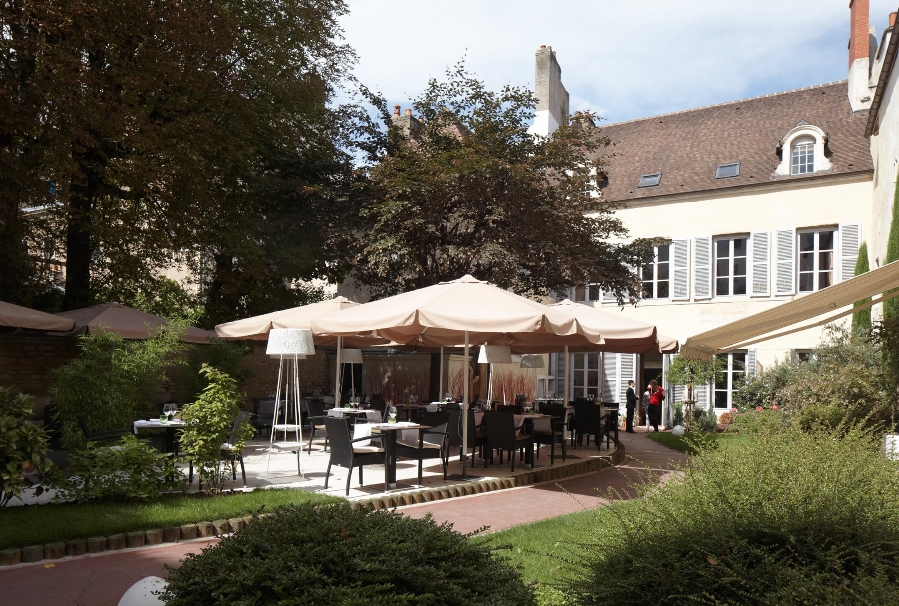
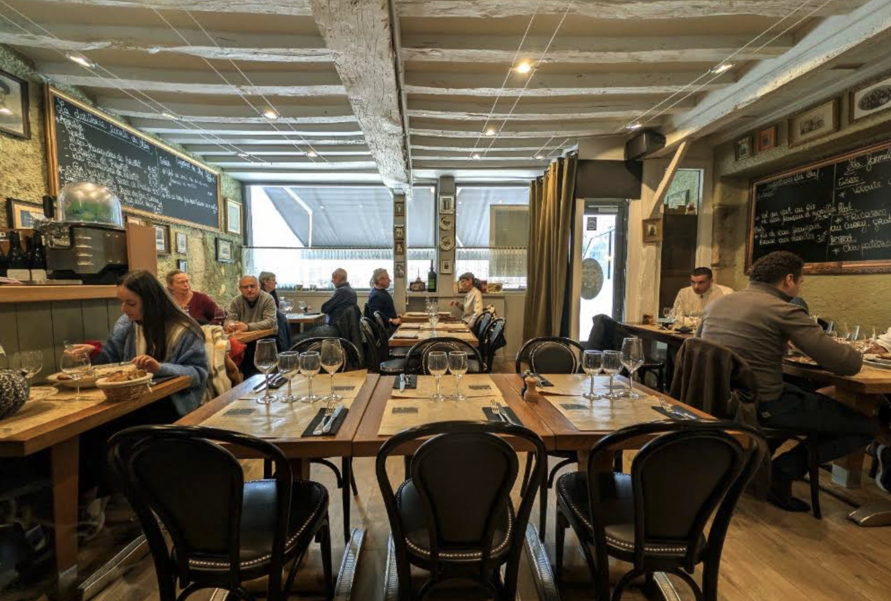
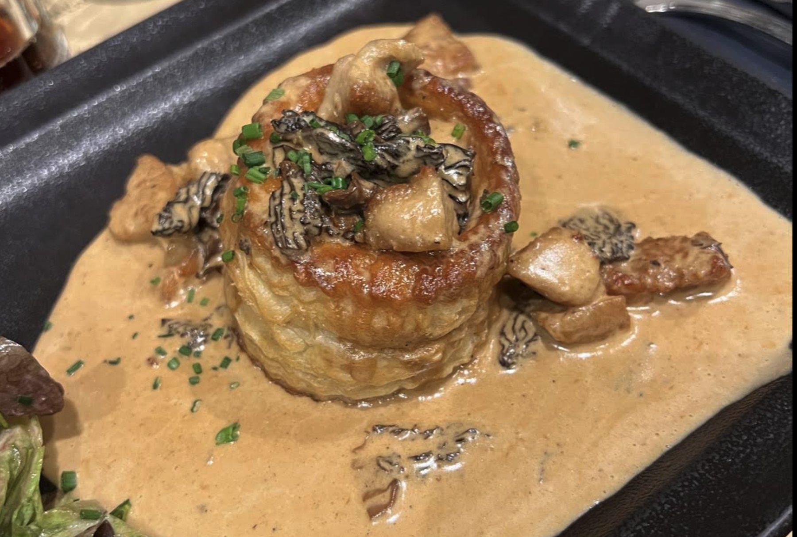
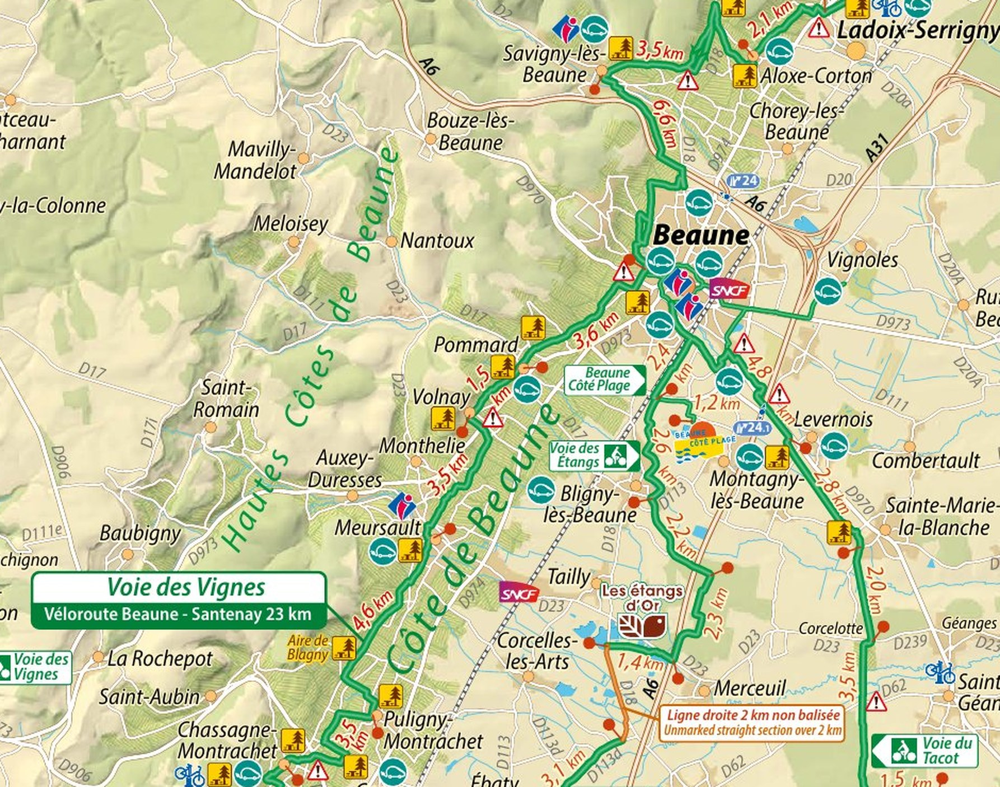
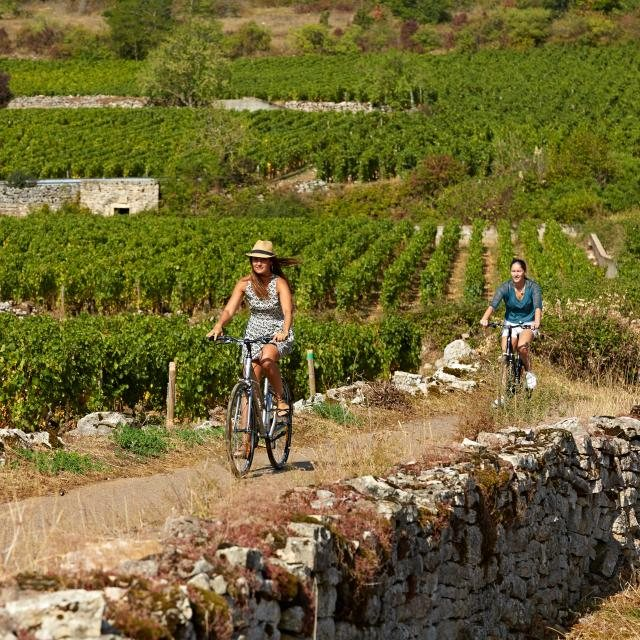
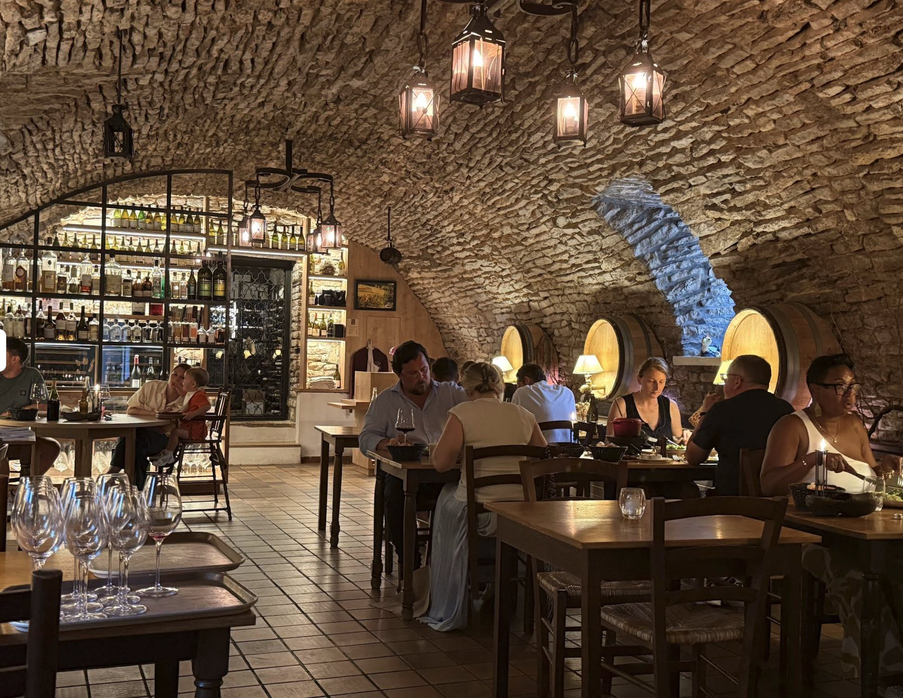
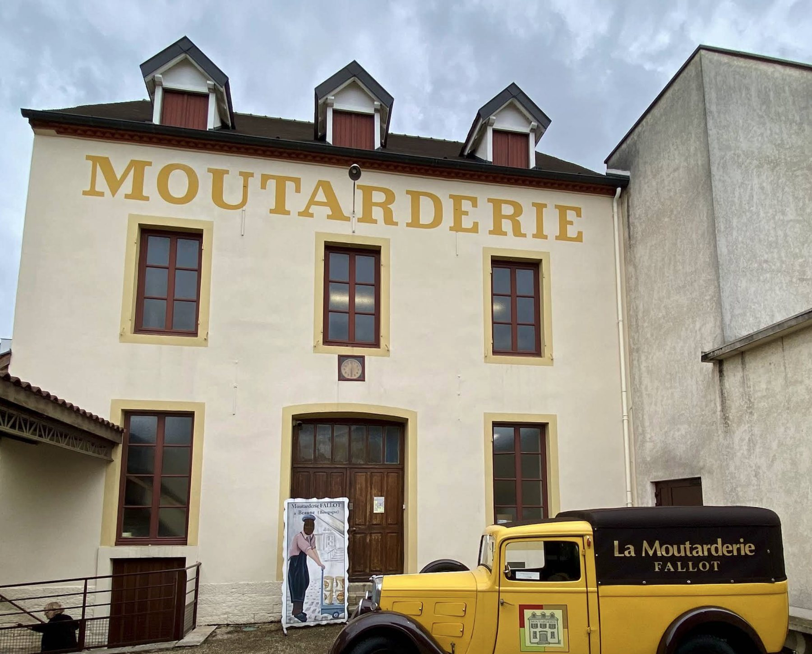
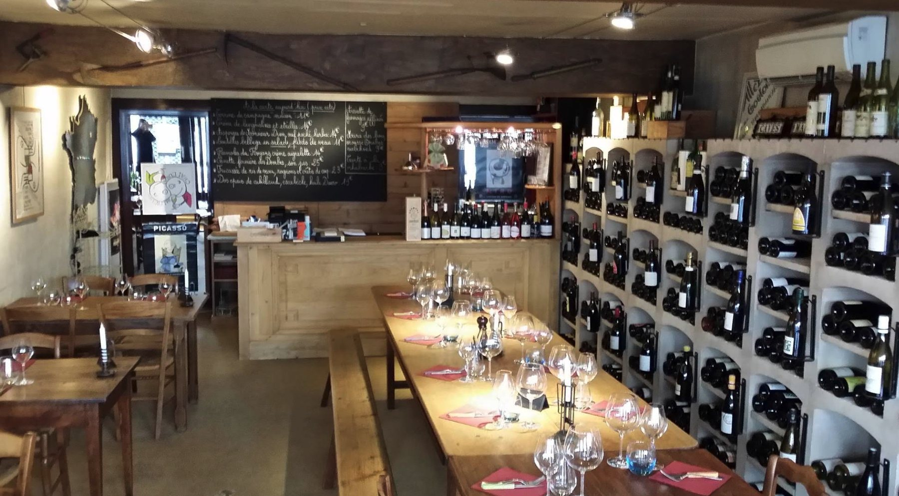
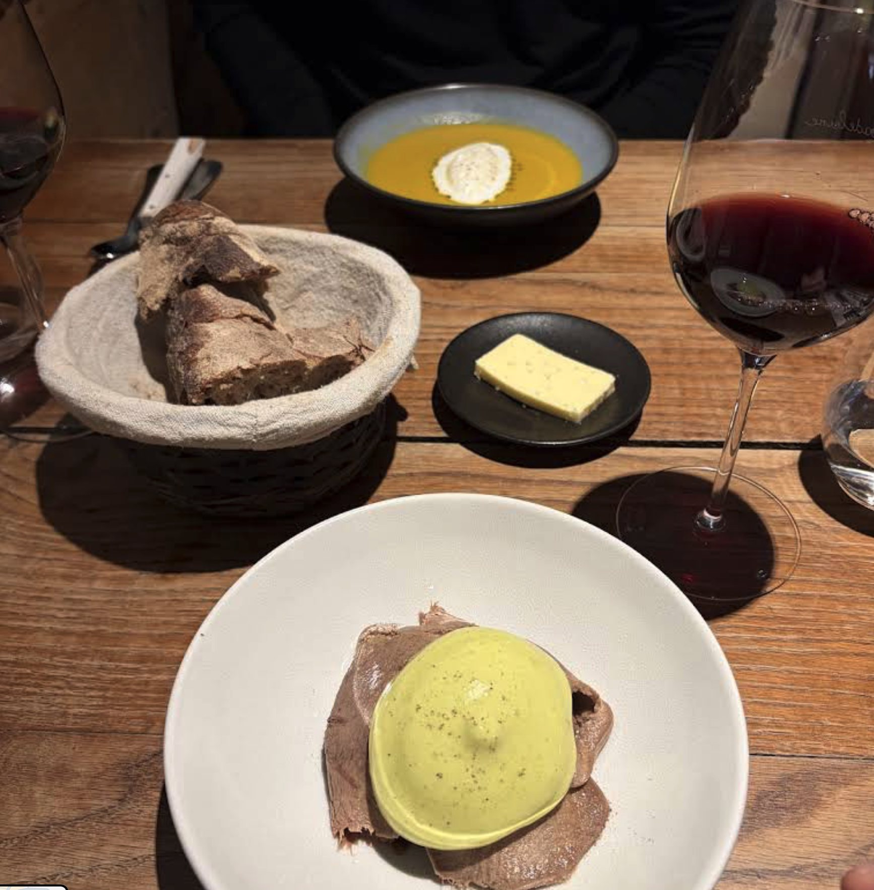

Before you go
Why mustard, and what's actually protected
It describes a method — seeds ground with verjuice or white wine — and anyone anywhere may legally use the name. Which is exactly why the shops in Dijon are more interesting than they sound: they are the places still doing it here.
It requires seeds grown in Burgundy and Burgundian white wine. For decades nearly all mustard seed came from Canada; local growers have been rebuilding acreage. The IGP mark is the only part of this with an address.
— founded 1840, still grinding on millstones. It is the anchor of the weekend, and it opens seven days a week.
Mustard seed is cut in July, so there are no mustard fields in September. And 2026 was an exceptionally early vintage — most Côte-d'Or picking finished around 20 August — so the vendange will be over. The compensation: cellars in mid-September are relaxed and glad to see you rather than flat out.
Day one
Friday 11 September — Dijon
-
Arrive by 14:00
- Reserve the hotel parking in advance
Whatever the drive takes, work backwards from this. The workshop is the one thing that can't move.
Central Dijon is almost entirely pedestrianised and Maison Philippe le Bon's courtyard has limited spaces. Ask for a superior room; the standards are compact.


Maison Philippe le Bon — a beamed room, and the garden terrace. -
14:45
Make your own mustard ★
- €12 each
- 1 hour
- Booking compulsory
Run with Fallot. You grind, crush, season and mix; you leave with your own jar and a voucher for a gift at the Fallot shop.
Slots at 10:00, 11:30, 14:45 and 16:30, April to 1 November. Book on +33 3 80 44 11 44 or info@otdijon.com.
This is the smallest-capacity thing on the weekend — and it is the “make” in walk, bike, taste, eat, make, see.
-
16:15
The Owl Trail, mustard edition
22 bronze owls set into the pavement, threading the old town. The booklet comes from the tourist office at 11 rue des Forges, five minutes from the hotel. Ninety unhurried minutes, and it runs past both mustard shops.
-
Fallot Boutique-Atelier 16 rue de la Chouette
Literally on the trail; tasting bar, millstone grinding visible on some days, mustards made with Meursault. -
Maille 32 rue de la Liberté
Moutarde à la pompe, pumped fresh into a stoneware jar. Fresh mustard is a different substance from jarred: sharper, more volatile, and it fades within weeks. Buy small, eat soon.
Only window Maille is closed Sunday and you're in Beaune all Saturday — this is your only window.Left hand on the owl at Notre-Dame, make a wish.
-
Fallot Boutique-Atelier 16 rue de la Chouette
-
19:45
Chez Léon
- Menu bourguignon €31–38
- Closed Sun & Mon
Unreconstructed Burgundian, and on-theme: carré de cochon, moutarde à l'ancienne on the carte, alongside œufs en meurette, escargots and bœuf bourguignon. Small room — book early.
Ask when you book When you book, ask whether they'll run lapin à la moutarde or rognons de veau à la moutarde that night. Both survive here as daily specials rather than fixed-carte items. Kitchens like being asked.

Chez Léon — the room, and a vol-au-vent with morels. -
22:00
Chez Bruno
- Tue–Sat to 23:00
Where Dijon's wine trade drinks.
Day two
Saturday 12 September — Beaune, by rail and bicycle
-
08:15
Les Halles de Dijon
- Tue, Thu, Fri, Sat · mornings only
Eiffel-framed iron market hall, open Tuesday, Thursday, Friday and Saturday mornings only, and Saturday is the big one. Forty minutes is enough: Époisses, jambon persillé, gougères, and a jar of IGP Moutarde de Bourgogne to taste against yesterday's Fallot and Maille.
-
09:00
Walk to Dijon-Ville
Walk to Dijon-Ville (10 min) and take the train to Beaune.
-
09:30
Hôtel-Dieu, Hospices de Beaune
- €12.50
- Daily 09:00–19:30
- Allow 1 h 15
The polychrome tiled roof, the Great Hall of the Poors, the van der Weyden Last Judgement. Go now — by eleven it is a queue.
-
10:50
Beaune Saturday market
A fast loop. Buy something for a stone wall between villages.
-
11:30
Collect the bikes — Bourgogne Randonnées
Conveniently on the station road. Take the e-bikes.
-
11:45
The Voie des Vignes ★
See the ride block below.
The Voie des Vignes
Flat, on small roads and vineyard tracks, running from Beaune through Pommard, Volnay, Meursault, Puligny-Montrachet, Chassagne-Montrachet to Santenay — 23 km one way on the official Pays Beaunois map. It is, unimprovably, a bike path through the most expensive farmland on earth.
Cyclists share these tracks with the growers who work them: 20 km/h limit, give way, take your rubbish home.
- Beaune
- 3.6 kmPommard
- 1.5 kmVolnay
- 3.5 kmMeursault
- 4.6 kmPuligny-MontrachetTurnaround
- 3.5 kmChassagne-Montrachet
- …Santenay
Volnay 5.1 km · Meursault 8.6 km · Puligny 13.2 km · Santenay 23 km

Official Pays Beaunois cycling map — the green line is the Voie des Vignes. Click the map to open it full size in a new tab. 
The track itself, between the walls. -
13:00
Lunch — Le Cellier Volnaysien
- 5 km in
- Closed Tue & Wed
Vaulted cellar rooms and tables outside. Jambon persillé and œufs en meurette are the signatures, and the attached cave sells Burgundy at prices that haven't noticed the tourists. Book.

Le Cellier Volnaysien — the vaulted cellar room. -
14:30
On to Meursault and Puligny, then turn
About 26 km round trip, which is the honest distance for the time available. Santenay and back is 46 km and will not fit today.
-
16:10
Bikes back
-
16:30
La Moutarderie Fallot ★
- €12
- Open daily
See the two-tour comparison below.

La Moutarderie Fallot, rue du Faubourg Bretonnière. Which Fallot tour
Same price, genuinely different visits.
Parcours Découvertes
- What
- France's first mustard museum — history, period tools, sound and light
- Length
- ~1 h 15
- Daily times
- 10:00 · 11:30 (Fr + En) · 15:00 · 16:30
- Price
- €12
The pickSensations Fortes
- What
- The working factory: silo to packaging, stone grinding still in use
- Length
- ~1 h
- Daily times
- 10:00 · 11:00 · 13:30 (En, Jun–Sep) · 14:00 · 14:30 · 15:00 · 16:00 · 16:30
- Price
- €12
Two thingsBoth end in a tasting; the boutique is open to 18:00. Book by phone and say which language — the English Sensations Fortes slot is 13:30, so at 16:30 you will likely be in a French group. If that matters, either take the 13:30 English tour and cut the ride short, or take Découvertes at 11:30, which runs in French and English, and rearrange the morning.
And: buy here, not in Dijon — same prices, and it is the source. The Meursault-based mustard, the pain d'épices, the blackcurrant.
-
19:15
Dinner — Caves Madeleine
- Open Sat
- Closed Wed & Sun
- Booking is a request
Shared tables, blackboard cooking, and a wine list run by people who care.
Not confirmed until they reply Their booking is a request, not a confirmation — it isn't settled until they call or email you back, so ask early.

Caves Madeleine — the communal table, and what comes out of the kitchen. -
21:30
Last train home
Comfortable, but it is the last one.
Day three
Sunday 13 September — the Cité, and home
12 Parvis de l'UNESCO — a kilometre from the old centre, on the site of the former hospital. Twenty minutes on foot from the hotel, or drive and park there, since you're leaving from it anyway.
-
09:30
A last walk in the vines
- Optional
Saturday gave you wheels instead of boots. The Route des Grands Crus starts on Dijon's own doorstep — 15 minutes by car to Chenôve or Marsannay-la-Côte, where marked paths run up through the vineyards with the whole Côte opening out below. An hour, easy, and it costs nothing in distance because the car is already loaded.
-
11:00
The Cité Internationale de la Gastronomie et du Vin
Three things to know, because the site is bigger and more mixed than it looks.
- The permanent exhibitions are free — 1,750 m² across À la Table des Français and Le 1204, an interpretation centre for the site's 800 years as a hospital.
- The Chapelle des Climats — a chapel of 1504, now an immersive projection about the Burgundy climats — is free to walk into, but the guided visit with a tasting is €9 and is the better version. That's your Sunday wine, and a properly good primer on why one dry-stone wall changes the price of a field.
- The Village Gastronomique is free and open Sunday 10:00–19:00 — nine artisan boutiques including cheese, charcuterie, chocolate and mustard, where you buy what you want, have it cooked on the plancha and eat at communal tables. Alongside it the Cave de la Cité pours from 3,000 references, 250 of them by the glass.
-
12:30
Sunday brunch at La Cuisine Expérientielle
- Reservation required
The Village's brunch buffet runs every Sunday and has become a Dijon institution.
Alternatives: La Table des Climats and Le Comptoir de la Cité are both on site. Or leave the Cité for Le Pré aux Clercs on Place de la Libération — open 7/7, menus €16–28, and its carte currently runs to cromesquis d'andouillette, sabayon à la moutarde, the single most on-theme plate in Dijon.
-
~15:00
Drive home
The Village Gastronomique's Sunday hours are confirmed (10:00–19:00) but the exhibition halls' Sunday hours are not — the Cité's own site blocks automated access. Ring +33 3 73 27 54 20 to check the exhibitions and the Chapelle des Climats tasting times before fixing Sunday morning.
Their online ticketing also lists around 16 ateliers and 7 École des Vins de Bourgogne tastings — worth a look for a Sunday slot, though most are French-only.
Do this first
Reservations — the booking order
In priority order. Ticks are kept in this browser.
-
+33 3 80 44 11 44 · Four slots a day, small groups. First.
-
And reserve the courtyard parking in the same call.
-
+33 3 80 50 01 07 · Friday 19:45. Ask about the lapin and the rognons.
-
+33 3 80 22 93 30 · Saturday 19:15. Remember: the booking isn't confirmed until they reply.
-
+33 3 80 22 10 10 · Saturday 16:30. State your language.
-
+33 3 80 21 61 04 · Saturday 13:00.
-
+33 3 80 22 06 03 · Two e-bikes from 11:30.
-
And check exhibition hours on +33 3 73 27 54 20.
Coming home
Carnet — what comes home in the boot
- Fallot, bought in Beaune — the Meursault-based mustard, the pain d'épices, the cassis.
- Maille moutarde à la pompe in the stoneware jar — Friday only, and eat it within the month.
- Anything marked IGP Moutarde de Bourgogne — seeds actually grown here, Burgundian white wine in the mix.
- From the markets and the Village: jambon persillé, Époisses (seal it in something unforgiving), crème de cassis.